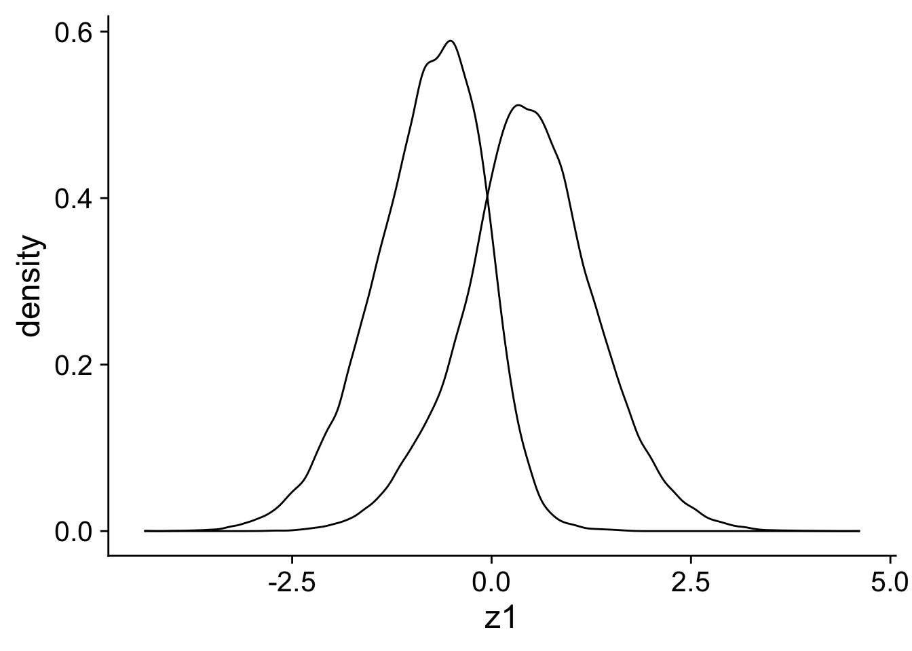

library(tidyverse)
library(broom)
library(here)
library(cowplot)
library(bayesboot)
theme_set(theme_cowplot(font_size = 18))
i_am("generated/inverse_probability_weight.qmd")here() starts at /Users/stijn/Dropbox/Teaching/lecturenotes/method_packageInverse Probability Weights
The previous pages highlighted the dangers to coefficients and standard errors of using two-step approaches in the research design. Still, if they are done well, they can benefit your analysis and make it more robust. This is the general idea of double robust estimators which is in my view a better way to think of most (propensity score) matching approaches.
Specifically, we are going to look at a situation where we have a binary treatment-control x and an outcome of interest y with two confounding factors z1 and z2 that have a complicated effect on x and y. The two-step approach that we are using is combining matching with regression. In the matching step, we first estimate the propensity, \(p\), that an observation belongs to the treatment group. Then, we will use the inverse predicted propensity to weight the observations in the regression.
Specifically, we want to put less weight on observations that are in the treatment group and that we could expect to be in the treatment group. So, the weight for those observations will be \(\frac{1}{p}\) in the regression. We will also put less weight on the observations in the treatment group, so we weight them by \(\frac{1}{1 - p}\). The intuition is that we want to put more weight on observations that are not expected to be control or treatment groups because we assume that this unexpected assignment is because of some random variation 1. As we have seen before, we are trying to bring cause of the (weighted) difference between the treatment and the control group back to random variation.
There is a lot more to matching, weighting and double robust estimators. An excellent introduction is Chapter 14 in Huntington-Klein (2021). You will also find some dedicated packages for matching and weighting estimators.
library(tidyverse)
library(broom)
library(here)
library(cowplot)
library(bayesboot)
theme_set(theme_cowplot(font_size = 18))
i_am("generated/inverse_probability_weight.qmd")here() starts at /Users/stijn/Dropbox/Teaching/lecturenotes/method_packageN <- 500
nsim <- 200
ntotal <- N * nsimThe data generating process for x and y is more complicated that what I usually use. First, we have two binary variables z2 and x. I use the transformation 1 - 2*x and 1 - 2*z2 a number of times. This transformation takes a binary (0,1) and transforms it in (1, -1). The main goal with this transformation is to make sure that interactions with these variables are more meaningful. If they take the value 0, interactions without the transformation would also take a value of 0.
It might not be immediately clear but x just follows a probit-binomial distribution which depends on the control variables z1 and z2 and its interactions. y is a normally distributed function of x and the control variables and the effect of x depends on the interaction between the controls.
sim_data <-
tibble(
sim = rep(1:nsim, each = N),
z1 = rnorm(ntotal, 0, 1),
z2 = rbinom(ntotal, 1, .5)
) %>%
mutate(
x = rbinom(ntotal, 1, pnorm((z2 + 2 * z1 + (1 - 2 * z2) * z1))),
y = rnorm(ntotal, x + z1 + z2 + (1 - 2 * x) * z1 * ( 1 - 2 * z2), 5)
)One of the problems with this data is that there is little overlap in the z1 variable between the treatment and the control group. In our case, this an indication that z1 is causing x and we have a potential confounder.
ggplot(sim_data, aes(x = z1, group = x)) +
geom_density()
At first, we want to figure out whether different regression specifications are biased. One way to do that is to work with the full data and ignore the sim variable.
First, we run our regular regressions with different but imperfect functional forms for the control variables.
bind_rows(
lm(y ~ x, data = sim_data) %>% tidy() %>% filter(term == "x"),
lm(y ~ x + z1 + z2, data = sim_data) %>% tidy() %>% filter(term == "x"),
lm(y ~ x + z1 * z2, data = sim_data) %>% tidy() %>% filter(term == "x"))# A tibble: 3 × 5
term estimate std.error statistic p.value
<chr> <dbl> <dbl> <dbl> <dbl>
1 x 2.73 0.0344 79.3 0
2 x 0.207 0.0449 4.60 0.00000420
3 x 0.260 0.0461 5.65 0.0000000166It’s clear that while adding the control variables (and the interaction) improves the estimate, we are still far off the correct estimate which is 1.
Next, we first run a logit regression to predict the probability that an observations is in the treatment group based on the control variables. I deliberately misspecify the regression to demonstrate that even an imperfect the propensity model can already help. Nevertheless, for a method to be truly double robust either the propensity model or the regression model needs to be correctly specified.
We calculate the weights and trimmed weights where I set the maximum weight to 100 which means that propensities smaller than 0.01 are winsorised at the value of 0.01 to avoid that the estimation is dominated by a couple of observations. We can run the regressions above again but now with the weights included. The disadvantage of trimming the weight is that we might be reintroducing a little bit of the bias that we are trying to avoid but the advantage is that because outliers are less likely to dominate, the standard errors are likely to be smaller.
prop_glm <- glm(x ~ z1 + z2, data = sim_data,
family = binomial(link = "logit"))
ipw_data <- sim_data %>%
mutate(propensity = fitted(prop_glm),
weight = if_else(x == 1, 1/propensity, 1/(1 - propensity)),
trim_weight = pmin(weight, 100))
bind_rows(
lm(y ~ x, data = ipw_data, weights = weight) %>% tidy() %>% filter(term == "x"),
lm(y ~ x + z1 + z2, data = ipw_data, weights = weight) %>% tidy() %>% filter(term == "x"),
lm(y ~ x + z1 * z2, data = ipw_data, weights = weight) %>% tidy() %>% filter(term == "x"))# A tibble: 3 × 5
term estimate std.error statistic p.value
<chr> <dbl> <dbl> <dbl> <dbl>
1 x 0.554 0.0323 17.2 7.76e- 66
2 x 1.22 0.0326 37.4 2.48e-303
3 x 1.19 0.0370 32.2 8.17e-226bind_rows(
lm(y ~ x, data = ipw_data, weights = trim_weight) %>% tidy() %>% filter(term == "x"),
lm(y ~ x + z1 + z2, data = ipw_data, weights = trim_weight) %>% tidy() %>% filter(term == "x"),
lm(y ~ x + z1 * z2, data = ipw_data, weights = trim_weight) %>% tidy() %>% filter(term == "x"))# A tibble: 3 × 5
term estimate std.error statistic p.value
<chr> <dbl> <dbl> <dbl> <dbl>
1 x 0.935 0.0329 28.4 3.32e-177
2 x 0.997 0.0319 31.3 2.40e-213
3 x 1.09 0.0352 30.9 7.43e-209We know by now that the standard errors of these type of procedures with multiple steps are likely to be wrong and we can use the Bayesian bootstrap again to estimate, the standard error for our estimate of interest. The unadjusted standard errors above are around 0.035.
ipw <- function(data, weights){
prop_glm <- glm(x ~ z1 + z2, data = data,
# the quasibinomial is necessary for the bayesian boostrap
# weights otherwise R gives warnings which can slow things down
family = quasibinomial(link = "logit"),
weights = weights)
ipw_data <- data %>%
mutate(propensity = fitted(prop_glm),
weight = weights * if_else(x == 1, 1/propensity, 1/(1 - propensity)),
trim_weight = weights * pmin(weight, 100))
# These weights are the propensity weights
lm <- lm(y ~ x + z1 * z2, data = ipw_data, weights = trim_weight)
beta <- coefficients(lm)["x"]
return(beta)
}
ipw(sim_data, rep(1, ntotal)) x
1.087827 boot_ipw <- bayesboot(sim_data, ipw, R = 200, use.weights = TRUE)
summary(boot_ipw)Bayesian bootstrap
Number of posterior draws: 200
Summary of the posterior (with 95% Highest Density Intervals):
statistic mean sd hdi.low hdi.high
x 1.211649 0.1816078 0.8545564 1.52107
Quantiles:
statistic q2.5% q25% median q75% q97.5%
x 0.8765427 1.070387 1.21436 1.342671 1.543616
Call:
bayesboot(data = sim_data, statistic = ipw, R = 200, use.weights = TRUE)The bootstrapped standard error is around 0.20 and noticeably higher. The standard errors are also quite wide given that we are using a quite large simulated data set. Unfortunately, these type of estimators come at a cost. The estimated uncertainty can be quite high because ultimiately when the data is far from ideal, there is only so much information you can glean from it.
This is only reinforced by doing the simulation properly and calculating the bootstrapped standard error separately for each of our 200 simulated datasets with 500 observations. The average standard error is more than 2.3 and thus with a sample of 500, we will never be able to report a significant effect. Again, this is not necessarily a weakness of the inverse probability approach. It just highlights that more advanced problems that correct for potential biases are not a free lunch. You cannot learn more from the data than what is in your data.
library(furrr)
cores <- parallel::detectCores()
plan(multisession, workers = cores - 2)
boot_function <- function(data){
bb <- bayesboot(data, ipw, R = 200, use.weights = TRUE)
se <- sd(bb$x)
return(se)
}
sim <- sim_data %>%
nest(.by = sim) %>%
mutate(se = future_map_dbl(.x = data, .f = ~ boot_function(.x),
.options = furrr_options(seed = TRUE),
.progress = TRUE))
summarise(sim, mean = mean(se), sd = sd(se))# A tibble: 1 × 2
mean sd
<dbl> <dbl>
1 2.37 0.523In the accounting and finance literature, you are more likely to see propensity score matching where we find appropriate matching control observations for each treatment observations based on the propensity scores. The disadvantage of propensity score matching is similar to the regular bootstrap. The inclusion of an observation is discrete which can lead to weird behaviour. That’s why I recommend inverse probability weights.↩︎